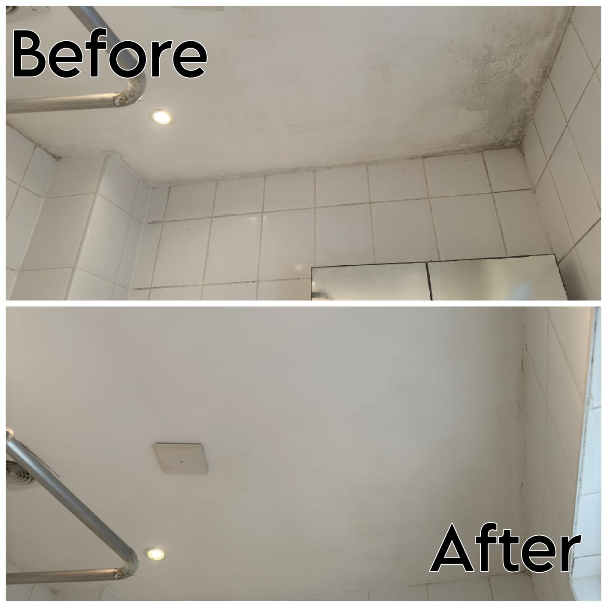

<!DOCTYPE html>
<html lang="en"></html>
<head>
    <meta charset="UTF-8">
    <meta name="viewport" content="width=device-width, initial-scale=1.0">
    <meta name='robots' content='index, follow, max-image-preview:large, max-snippet:-1, max-video-preview:-1' />
    <link rel="stylesheet" href="styles/Generalt_style.css">
    <link rel="stylesheet" href="styles/style_clean.css">
    <title>Surface Repair</title>
    <link href="https://fonts.googleapis.com/css2?family=Roboto:wght@400;700&display=swap" rel="stylesheet">
    <link rel="stylesheet" href="https://cdn.jsdelivr.net/npm/swiper/swiper-bundle.min.css">
    <script src="https://cdn.jsdelivr.net/npm/swiper/swiper-bundle.min.js"></script>
    <script src="styles/photos.js"></script>
    <div class="image-container"></div>
    <script type="text/javascript">
        function googleTranslateElementInit() {
            new google.translate.TranslateElement({pageLanguage: 'en', includedLanguages: 'en,nl,es,fr,de,it,pt'}, 'google_translate_element');
        }
    </script>
    <script type="text/javascript" src="//translate.google.com/translate_a/element.js?cb=googleTranslateElementInit&hl=en"></script>
</head>
<meta name="viewport" content="width=device-width, initial-scale=1.0">
<body>
    <header>
        <nav>
            <a href="index.html" class="logo">
                
            </a>
            <ul class="nav-list">
                <li><a href="index.html">Home</a></li>
                <li><a href="About_us.html">About Us</a></li>
                <!-- submenu -->
                <li class="dropdown">
                    <span class="dropdown-title">Services <span class="n_t"> v</span></span>
                    <ul class="dropdown-menu">
                        <li><a href="repair.html" class="category">Repairs</a></li>
                        <li><a href="clean.html" class="category">Cleaning</a></li>
                    </ul>
                </li>
                <!-- submenu -->
                <li class="dropdown">
                    <span class="dropdown-title">Sectors <span class="n_t"> v</span></span>
                    <ul class="dropdown-menu">
                        <li><a href="domestico.html" class="category">Residential</a></li>
                        <li><a href="comercial.html" class="category">Commercial</a></li>
                    </ul>
                </li>
                <li><a href="https://wa.me/31618655043?text=Hello%20!%20I%20am%20interested%20in%20your%20services.%20I%20would%20love%20to%20get%20a%20quote"><i class="fa-brands fa-whatsapp"></i> <span class="tel"> WhatsApp </span></a></li>
                <li><a href="commentss.html"><i class="category"></i> <span class="tel"> Comments </span></a></li>
                <li><a href="Contact.html" class="btn_n">Book Now</a></li>
            </ul>
            <div id="google_translate_element"></div>
        </nav>
    </header>
    <main>
    <section class="section_1">
        <div class="content">
            <h1>🧼 Deep and Sustainable Ecological Cleaning</h1>
            <h4>We take care of your home, business, and the planet with effective and chemical-free cleaning</h4>
            <p>At Eco Steam Clean & Repairs, we revolutionize traditional cleaning with a sustainable, safe, and highly effective approach. 
                We specialize in deep cleaning with steam technology and ecological products, removing dirt, 
                bacteria, and allergens without compromising health or the environment.</p>
                <br>
            <p>Our cleaning not only removes stains and odors but also deeply disinfects all surfaces, ensuring 
                a safe and healthy environment for your home or business.</p>
                 <br>
        </div>
        <div class="image">
            
        </div>
    </section>
    <section class="section_">
        <h1>🌿 Ecological Technology: Steam Cleaning and Natural Detergents</h1>
        <h3>📌 Cleaning with high-pressure steam</h3>
        <p>We use steam cleaning machines that work with water pressure and high temperatures, effectively removing bacteria, viruses, fungi, and mildew without harsh chemicals. 
            The steam penetrates surfaces and removes dirt and grease even in the toughest corners.</p>
        <br>
        <h3>📌 Use of detergents with natural extracts</h3>
        <p>When extra reinforcement is needed, we use biodegradable products with natural ingredients such as:</p>
            <ul class="s1-list">
            <li>✔ Lemon 🍋 - Disinfecting power and odor removal.</li>
            <li>✔ Ginger 🌱 - Antibacterial and neutralizing properties. </li>
            <li>✔ White vinegar - Natural disinfectant and degreaser.</li>
            <li>✔ Baking soda - Stain and odor remover.</li>
        </ul>
        <br>
        <p>These ingredients guarantee effective cleaning without leaving toxic residues in your home or business.</p>
        
    </section>
    <section class="section_2">
        <div class="container-repairs">
            <h1>Our Deep Cleaning Services</h1>
    
            <!-- Card 1: Residential Cleaning -->
            <div class="repair-card">
                
                <div id="onderhud" class="repair-info">
                    <h2>🏡 Residential Cleaning</h2>
                    <p>We transform your home into a fresh, clean, and safe space:</p>
                    <ul>
                        <li>✔ Sanitization of surfaces in kitchens, bathrooms, and bedrooms.</li>
                        <li>✔ Removal of mites, bacteria, and allergens.</li>
                        <li>✔ Cleaning of walls, ceilings, and hard-to-reach corners.</li>
                        <li>✔ Disinfection of mattresses and furniture.</li>
                    </ul>
                </div>
            </div>
    
            <!-- Card 2: Commercial Cleaning -->
            <div class="repair-card">
                
                <div class="repair-info">
                    <h2>🏢 Commercial and Business Cleaning</h2>
                    <p>We optimize hygiene in offices, shops, and workspaces:</p>
                    <ul>
                        <li>✔ Sanitization of desks, chairs, and office equipment.</li>
                        <li>✔ Deep cleaning in restaurants and industrial kitchens.</li>
                        <li>✔ Disinfection of high-touch surfaces.</li>
                        <li>✔ Specialized cleaning for gyms and health centers.</li>
                    </ul>
                </div>
            </div>
    
            <!-- Card 3: Facade Cleaning -->
            <div class="repair-card">
                
                <div class="repair-info">
                    <h2>🌱 Facade Cleaning and Mold Removal</h2>
                    <p>Facades are exposed to pollution, weather, and moisture. Our service includes:</p>
                    <ul>
                        <li>✔ Cleaning of exterior walls without damaging the paint.</li>
                        <li>✔ Removal of mold and moisture stains.</li>
                        <li>✔ Treatment to prevent mold growth.</li>
                    </ul>
                </div>
            </div>
    
            <!-- Card 4: Mold Removal in Interiors -->
            <div class="repair-card">
                
                <div id="moho" class="repair-info">
                    <h2>🦠 Mold and Mildew Removal in Interiors</h2>
                    <p>We remove and prevent the growth of mold and mildew in interiors with ecological solutions:</p>
                    <ul>
                        <li>✔ Removal of mold spores in bathrooms, kitchens, and basements.</li>
                        <li>✔ Disinfection with steam to prevent recurrence.</li>
                        <li>✔ Ecological solutions without impact on air quality.</li>
                    </ul>
                </div>
            </div>
    
            <!-- Card 5: Public Transport Cleaning -->
            <div class="repair-card">
                
                <div class="repair-info">
                    <h2>🚇 Public Transport and Commercial Fleet Cleaning</h2>
                    <p>Specialized services for hygiene in transport vehicles:</p>
                    <ul>
                        <li>✔ Sanitization of transport units with steam.</li>
                        <li>✔ Removal of odors and bacteria in seats and surfaces.</li>
                        <li>✔ Disinfection of steering wheels, handles, and seat belts.</li>
                    </ul>
                </div>
            </div>

            <div class="repair-card">
                
                <div class="repair-info">
                    <h2>🌿 Design, Creation, and Maintenance of Gardens</h2>
                    <p>We transform and care for your green spaces with ecological and customized solutions:</p>
                    <ul>
                        <li>✔ Design and creation of gardens – From small urban spaces to large residential or commercial gardens.</li>
                        <li>✔ Full maintenance – Pruning, irrigation, fertilization, and pest control with natural methods.</li>
                        <li>✔ Installation of natural and artificial grass – Solutions tailored to each space and need.</li>
                        <li>✔ Cleaning and restoration of green areas – Removal of weeds, dry leaves, and organic waste.</li>
                    </ul>
                    <h4>🌱 We take care of your garden so it always looks impeccable and healthy. Contact us for more information!</h4>
                </div>
            </div>
    
        </div>
    </section> 
    <section class="galeria-section">
        <h1>Gallery: Effect Eco Steam & Repairs</h1>
        <div class="container-galeria">
            <!-- Left arrow -->
            <div class="swiper-button-prev"></div>
    
            <!-- Swiper Carousel -->
            <div class="swiper mySwiper">
                <div class="swiper-wrapper">
                    <div class="swiper-slide"></div>
                    <div class="swiper-slide"></div>
                    <div class="swiper-slide"></div>
                    <div class="swiper-slide"></div>
                    <div class="swiper-slide"></div>
                    <div class="swiper-slide"></div>
                </div>
            </div>
    
            <!-- Right arrow -->
            <div class="swiper-button-next"></div>
        </div>
    </section>
    
    <section id="sanatizacion"class="section_">
        <h1>Benefits of Our Cleaning Method 💚 </h1>
        <ul class="s1-list">
            <li>✔ <strong>Ecological and free of harsh chemicals</strong> – We protect your health and that of the planet with biodegradable products 
                 and cleaning techniques that do not pollute the air or water. Our cleaning leaves no dangerous chemical 
                 residues in your spaces. </li>
            <li>✔ <strong>Eliminates viruses, bacteria, and fungi</strong> – Cleaning with high-pressure steam guarantees the elimination of 
                microorganisms without harsh chemical products. It is ideal for maintaining healthy environments 
                in homes, offices, shops, and medical spaces.</li>
            <li>✔ <strong>Eliminates odors without synthetic fragrances</strong> – We neutralize odors at the source, without masking them with artificial perfumes. 
                We use natural ingredients like lemon and vinegar, which besides disinfecting, leave a fresh and light scent.</li>
            <li>✔ <strong>Safe for children, pets, and people with allergies</strong> Because we do not use toxic products, 
                our cleaning method is completely safe for people with chemical sensitivity, 
                respiratory allergies, or sensitive skin. We take care of the health of your entire family without 
                compromising deep cleaning.</li>
            <li>✔ <strong>Effective cleaning without damaging surfaces</strong> – Our technology allows deep cleaning without affecting delicate materials
                 such as wood, ceramics, stainless steel, or textiles. We guarantee impeccable results without wear or damage.</li>
            <li>✔ <strong>Contributes to a healthier and more sustainable environment</strong> – By reducing the use of chemicals and minimizing water consumption, we help
                 create healthier spaces and contribute to environmental preservation.</li>
            
        </ul>
        <br>
        <h4> Discover a new way of cleaning, safer, more natural, and more efficient with Eco Steam Clean & Repairs. Contact us today! 💚</h4>
    
    </section>

    <link rel="stylesheet" href="https://cdnjs.cloudflare.com/ajax/libs/font-awesome/6.4.2/css/all.min.css">
    <footer class="footer">
        <div class="footer-container">
            
            <div class="footer-contact">
                
                <p><i class="fas fa-map-marker-alt"></i> Amsterdam</p>
                <p>
                <i class="fas fa-envelope"></i> 
                <a href="mailto:green@ecosteamclean.nl">green@ecosteamclean.nl</a>
                </p>
                <p>
                    <a href="mailto:greenclean0723@gmail.com">greenclean0723@gmail.com</a>
                </p>
                <p>
                <i class="fa-brands fa-whatsapp"></i> 
                <a href="https://wa.me/31618655043?text=Hello%20!%20I%20am%20interested%20in%20your%20services.%20I%20would%20love%20to%20get%20a%20quote" 
                target="_blank">6 18655043 </a>
                </p>
                <p>
                    <a href="https://www.instagram.com/ecosteam_clean/" target="_blank">
                        <i class="fab fa-instagram"></i> ecosteam_clean
                    </a>
                </p>
                <p>
                    <a href="https://www.facebook.com/people/Eco-steam-Clear-Repairs/pfbid02mn1zwyZRaRNB6hDrp2An12XDfkH2fseKAm7KPvzoPWoJJGNWwuNoXHDmgcXvHszml/" target="_blank">
                        <i class="fab fa-facebook"></i> Eco-Steam Clean & Repairs
                    </a>
                </p>
                <p>
                    <a href="https://www.tiktok.com/@ecosteam_clean" target="_blank">
                        <i class="fab fa-tiktok"></i> ecosteam_clean
                    </a>
                </p>
                <p>
                <a href="https://signal.me/#p/+31685182236" target="_blank">
                    <i class="fas fa-comment-dots"></i> Contact us on Signal
                </a>
                </p>
                <p>
                    <a href="https://www.kvk.nl/bestellen/#/96476877000061800988?origin=search" target="_blank">
                        <i class="fas fa-landmark"></i> KVK 96476877
                    </a>
                </p>
                <p>
                    BTW: NL005212584B91
                </p>
            </div> 

            <div class="footer-links">
                <h3>Cleaning Solutions</h3>
                <ul>
                    <li><a href="s_repair.html">Surface repair</a></li>
                    <li><a href="furniture.html">Furniture assembly and installation</a></li>
                    <li><a href="moho.html">Stain removal on walls and surfaces</a></li>
                    <li><a href="garden.html">Maintenance and care of green spaces</a></li>
                    <li><a href="saneamiento.html">Sanitation</a></li>
                </ul>
            </div>             

            <div class="footer-links">
                <h3>Important Links</h3>
                <ul>
                    <li><a href="index.html">Homepage</a></li>
                    <li><a href="About_us.html">About Us</a></li>
                    <li><a href="#sectores">Services</a></li>
                    <li><a href="Contact.html">Prices</a></li>
                </ul>
            </div>
        </div>  
    </footer>
</body>
</html>